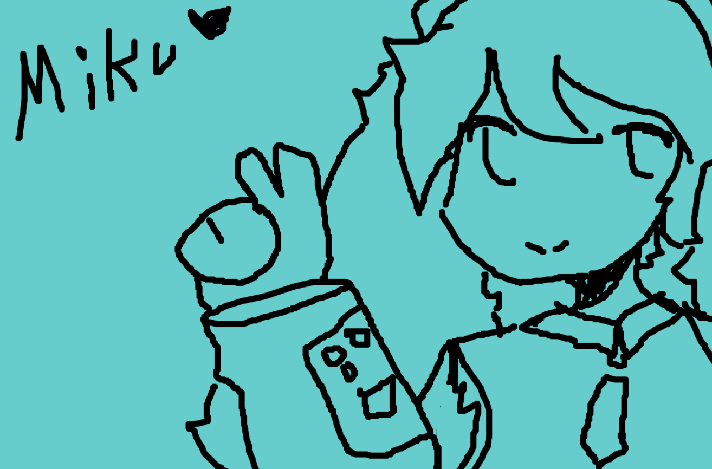

DIY Photoshop!
For my DIY Photoshop I wanted to draw Hatsune Miku! I have been a Miku enjoyer since I came across the Miku cover of "Ievan polkka" in elementry school! This past weekend I went to the theaters to watch the Project Sekai movie "A Miku Who can't Sing" with a friend, and besides it being peak cinema, it filled me with motovation and hope. The general message in the movie was not to give up no matter how hard it gets and that it is okay to rely/talk to others about how you feel. It really touched my heart to another level hearing that come from something that has influenced me for forever. Watching the movie gave me the last bit of motovation I needed to finish off this semster strong!! As for the pen I wanted to reflect early 2010 art work! For me 2010 art feels like a THICK pen and MS.paint texture. I long for that style to come back !! I am also just a big fan of thicker pens, I like how it looks. 